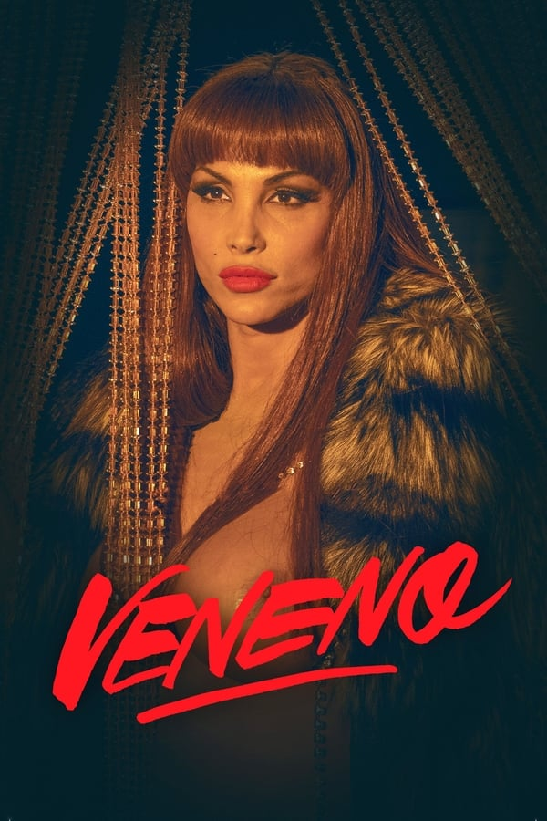
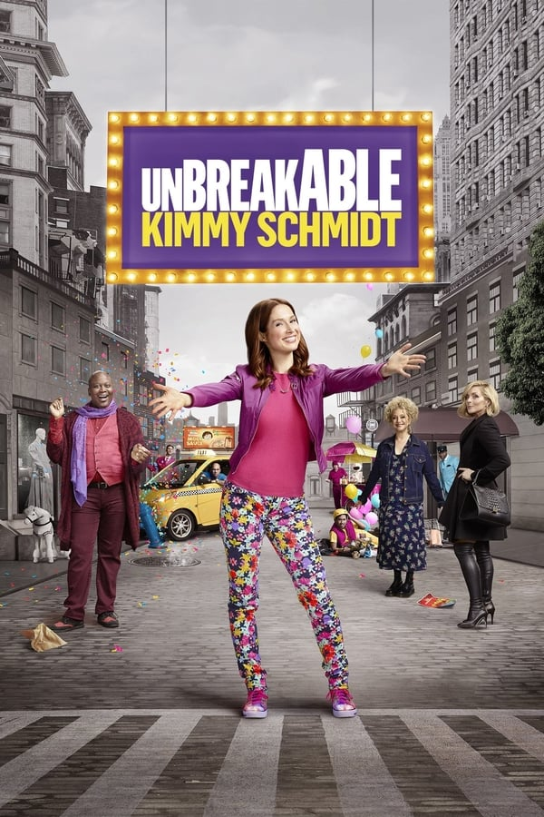

Euphoria
9.9Sinopse
Um grupo de estudantes do ensino médio lida com diferentes situações típicas da idade como drogas, sexo, busca pela identidade, traumas, comportamento nas redes sociais e amizade.
Sex Education
9.9Sinopse
O inseguro Otis manja tudo quando o negócio é aconselhamento sexual, graças à sua mãe sexóloga. E aí a rebelde Maeve propõe criar uma clínica de terapia sexual na escola.
Young Royals
9.2Sinopse
Longe das obrigações da realeza, um príncipe ganha a oportunidade de explorar a própria identidade – até inesperadamente se tornar o próximo da linha de sucessão.
Orange is the new black
9.2Sinopse
Um crime cometido no passado coloca uma privilegiada nova-iorquina na prisão, onde ela faz várias amigas. E inimigas.
Pose
9.9Sinopse
Em Nova York, no final da década de 1980, Blanca abriga jovens LGBT que foram expulsas de suas casas. A época foi marcada pela ascensão da cultura de luxo e o surgimento dos bailes LGBT.Queer Eye for the Straight Guy
7.8Sinopse
Você nunca sabe o que os Fab Five vão fazer - ou dizer - a seguir, enquanto viajam pelos Estados Unidos e desconstroem a vida de um cara hetero, dando a ele um novo guarda-roupa fabuloso, dicas de higiene pessoal, uma receita de assinatura ou duas, alguns móveis bonitos, habilidades de relacionamento pessoal e uma atitude totalmente nova.
RuPaul’s Drag Race
9.3Sinopse
RuPaul’s Drag Race é o reality, idealizado e apresentado pela famosa dragqueen RuPaul, que procura as dragqueens que tenham carisma, coragem e talento para suceder ao título America’s Next Drag Superstar, em tradução literal Próxima Drag Superstar da América.Com amor, Victor
8.5Sinopse
A série segue Victor, um novato na escola Creekwood High, em sua própria jornada de autodescoberta, enfrentando desafios em casa, ajustando-se a uma nova cidade e batalhando com sua orientação sexual. Quando tudo parece demais, ele estende a mão para Simon para ajudá-lo a navegar pelos altos e baixos do ensino médio.Boca a boca
7.9Sinopse
O surto de uma doença infecciosa transmitida pelo beijo assusta os adolescentes de uma cidade do interior no Brasil.

Veneno
8.4Sinopse
Adorada por seu carisma e sua maneira livre, explícita e divertida de se expressar, La Veneno ganhou popularidade graças a suas aparições na televisão nos anos 90. No entanto, sua vida e principalmente sua morte continuam sendo um enigma. 'Venom' é uma série que conta, através de uma heroína implacável, a história da realidade LGBTI na Espanha, da década de 1960 até os dias atuais.
Sense8
9.8Sinopse
Esta série segue oito desconhecidos que passam a compartilhar sentimentos e habilidades enquanto tentam evitar seu extermínio.
A maldição da mansão Bly
8.9Sinopse
Uma babá adentra um mundo de segredos sinistros neste romance gótico do criador de "A Maldição da Residência Hill".Queer as folk
7.9Sinopse
Humor ousado e emoção genuína compõem esta série original que gira em torno das vidas, amores, ambições, carreiras e amizades de um grupo de homens e mulheres gays que vivem na Avenida da Liberdade na atual Pittsburgh, PA.The L world
7.8Sinopse
A série tem foco nas vidas e relacionamentos de uma série de mulheres lésbicas e bissexuais que vivem no bairro de West Hollywood, em Los Angeles.Merlil
8.1Sinopse
Merlí Bergeron (Francesc Orella) é um professor de filosofia nada convencional, que precisa reorganizar sua vida pessoal enquanto tentar de todas as formas mostrar para as pessoas a importância da filosofia. Para alguns parentes e colegas de trabalho, no entanto, ele motivo de escândalo. Para seus alunos e seu filho gay, Merlí é uma inspiração.Eu nunca
8.4Sinopse
Ela teve um ano complicado. Agora, tudo que essa jovem quer é melhorar seu status social. Será que os amigos, a família e seus sentimentos vão ajudar?Glee
9.2Sinopse
O professor de espanhol Will Schuester resolve comandar o coral da escola, Glee Club. Tentando dar nova vida ao grupo, ele procura diferentes alunos, populares e nerds, como Rachel Berry, Kurt Hummel, Finn Hudson, Quinn Fabray e Brittany Pierce. Schuester tenta equilibrar a sua vida pessoal, enquanto ensaia com os seus novos alunos, mas logo começa a enfrentar as armadilhas da treinadora Sue Sylvester.Elite
8.0Sinopse
Após três jovens da escola pública serem transferidos para um conceituado colégio de elite, o conflito entre classes acaba levando a um assassinato.
Modern family
9.9Sinopse
Você consegue acreditar que todos eles são parentes? Nem eles! Modern Family nos traz uma divertida e inovadora visão do que significa criar uma família nesta época doida em que vivemos. Relacionamentos multiculturais, adoção e casamento de pessoas do mesmo sexo são apenas alguns dos assuntos atuais abordados por esta série que os analisa de modo divertido e sensível.
